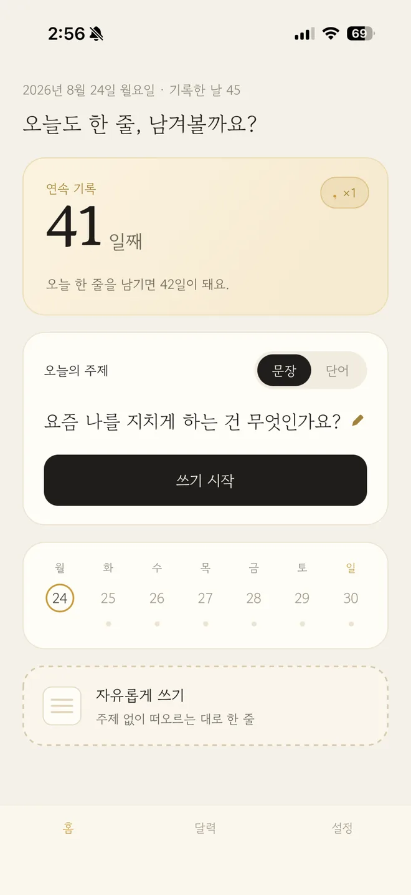
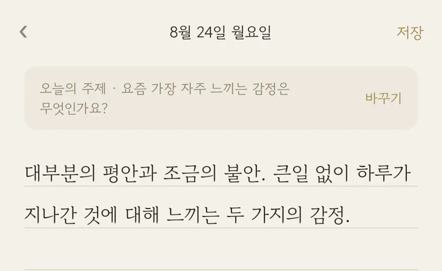
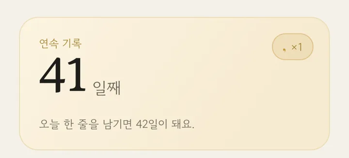
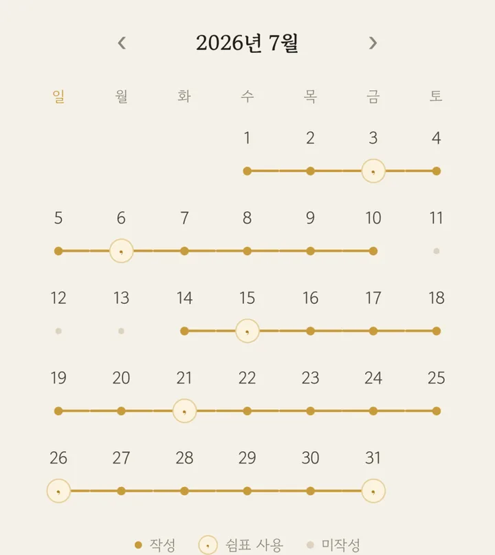

쓰다 만 일기장이 몇 권인가요?
하루 한 줄이면
충분해요
무료회원가입 없이기록은 내 폰에만

링크가 열리지 않으면
길게 눌러 [링크 열기]를 선택하시거나, App Store에서 낙서장씨를 검색해 주세요.

낙서장씨는 이렇게 이어져요
한 줄씩, 쉬어가며,
금빛 실로
-
하루 한 줄
오늘은 딱 한 문장이면 됩니다. 사진 한 장을 곁들여도 좋아요.
무엇을 쓸지 막막한 날엔 오늘의 주제와 단어가 살짝 거들어 드립니다.

-
이어지는 기록, 쉼표
매일 쓰면 연속 기록이 쌓이고, 7일마다 “쉼표”를 하나 얻습니다.
하루쯤 건너뛰어도 쉼표가 기록을 대신 이어줘요.
일기는 완벽함이 아니라 꾸준함이니까요.

-
달력에 쌓이는 나의 시간
작성한 날들이 달력 위에 금빛 실로 이어집니다.
한 달을 돌아보면, 한 줄들이 모여 꽤 근사한 이야기가 되어 있을 거예요.

내 기록은 내 기기에만
서버도, 회원가입도
없습니다
- 모든 기록은 휴대폰 안에만 저장됩니다. 개발자를 포함한 누구도 볼 수 없어요.
- 구글 드라이브 백업(선택)으로 기기를 바꿔도 글과 사진을 옮길 수 있어요. 내 계정의 앱 전용 공간에만 저장됩니다.
이미 쓰고 계신가요
같이 만들어가요
도움말
자주 묻는 것들
회원가입이 필요한가요?
아니요. 열자마자 바로 쓸 수 있어요.
쉼표는 어떻게 생기나요?
매일 쓰면 7일마다 하나씩 생기고, 두 개까지 모아둘 수 있어요. 하루쯤 건너뛴 날은 쉼표가 기록을 대신 이어줘요.
휴대폰을 바꾸면 기록은요?
설정의 구글 드라이브 백업으로 글과 사진을 새 휴대폰에 옮길 수 있어요.
프리미엄은 iPhone에서는 설정 › 프리미엄 화면 아래 구매 복원으로, Android에서는 같은 구글 계정이면 그대로 돌아와요.
광고는 언제 나오나요?
하루 한 번, 글을 남긴 직후에만 잠깐 보여요. 프리미엄은 저장 뒤 광고가 없어요.
기록을 지우려면요?
앱을 삭제하면 휴대폰에 저장된 기록이 함께 지워져요. 드라이브 백업은 구글 드라이브 설정의 앱 관리에서 지울 수 있어요.